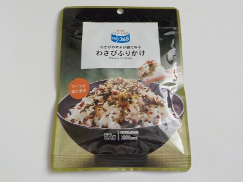

静岡県静岡市駿河区南町11番1号
更新日 : 2026/08/08

わさびふりかけがあるのは知っていますが、わさびはお茶漬けのイメージが強いかな。
はごろもフーズの商品なのでカツオ風味が強いのかなと思ったんですが、ワサビ味の方が勝ってました。わさび味がしっかりあるので、ご飯にかける量が少なくてすみます。節約できますね。
長持ちしそうです。
【おいしいものを食べよう。】【たくさん寝よう。】
【ソロ活をしよう!】【季節感のあることをしよう。】【動画視聴はほどほどに。】【当サイトの全てのコンテンツは無断転載禁止です。】